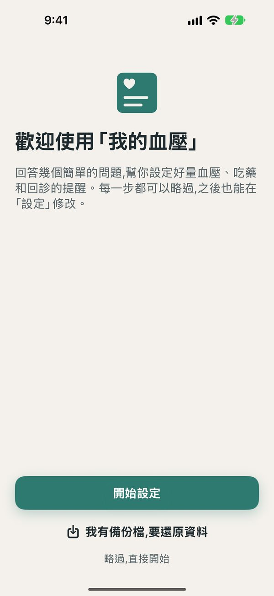
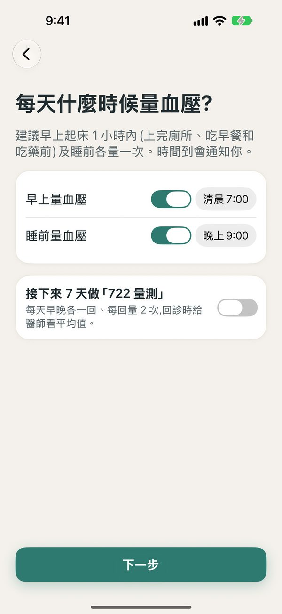

拍血壓計，數字自動帶入
量完血壓，把血壓計螢幕對準白框拍一張，收縮壓、舒張壓、心率自動填好，不必一個一個按數字。
- 在 iPhone 上辨識，照片不上傳、不保存。
- 同一張照片讀兩次，看不清楚的欄位留空讓你自己輸入。
- 需要支援 Apple Intelligence 的 iPhone（iOS 27 以上）。
專為長輩設計的大字介面，也讓家人放心。拍一下血壓計就能記錄，每天準時提醒吃藥，回診帶什麼、慢箋什麼時候可以領，都幫你記得。

依照長輩與家人每天實際會遇到的情況重新整理：從第一次打開、每天量血壓吃藥，到回診前、換新手機，都幫你想好了。
量完血壓，把血壓計螢幕對準白框拍一張，收縮壓、舒張壓、心率自動填好，不必一個一個按數字。


台灣高血壓學會建議回診前在家做「722」：連續 7 天、每天早晚 2 回、每回量 2 次。App 用格子顯示進度，第 1 次存好會倒數 1 分鐘提醒量第 2 次。


首頁右上角「傳給家人」，一段文字把今天的血壓、近 7 天平均、還沒吃的藥傳到 LINE。量到 ≥180/120 時，大字的處置畫面陪你一步步做：休息、5 分鐘後再量、一鍵撥 119、一鍵通知家人。

打開 App 後，設定精靈用大字一步步問你：想用來做什麼、每天幾點量血壓、吃哪些藥、下次回診是什麼時候。每一步都能略過；換新手機的人也能直接從備份檔還原。


依 2022 台灣高血壓治療指引，即時判斷正常、偏高、第一期或第二期高血壓，並給出白話建議。
每天像鬧鐘一樣提醒吃藥，通知上直接按「已服用」；可設定每次吃幾顆、半顆，看近 7 天服藥率。
前一晚與看診前提醒，出門前用大字清單確認健保卡、慢箋、藥袋都帶了。
依健保規定「上次給藥期間屆滿前 10 日內」自動算出每次最早可領日，時間到提醒你去領。
一鍵產生中文血壓報告：早晚平均、趨勢圖、用藥與服藥率、量測明細，可列印或傳給醫師。
手錶上記錄血壓（自動帶入手錶心率）、勾選用藥；錶面小工具一眼看到今天吃藥了沒。
可把血壓與心率寫入「健康」App，也能讀入藍牙血壓計 App 的紀錄，不用重複輸入。
免註冊、無雲端帳號。紀錄只存在你的 iPhone，開發者看不到你的健康資料。


快速設定、介面導覽、每個功能的操作步驟與常見問題，圖文並茂共 33 頁。適合列印給長輩，或家人先看過再教。
本 App 僅供個人紀錄與提醒，不是醫療器材，不能取代醫師診斷。若血壓 ≥ 180/120，或有胸痛、呼吸困難、單側無力、說話不清等症狀，請立即就醫或撥打 119。